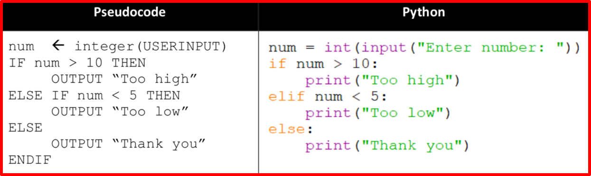

3.2.3 Arithmetic, Relational and Boolean Operations in a Programming Language
Table of Contents
1 Arithmetic Operations
Learn It: What are Arithmetic Operations?
Operations – In the context of Computer Science, an operation is an action that is performed on one or more pieces of data in order to produce additional data. There are Arithmetic, Relational and Boolean Operations.
Arithmetic Operations - A process performed on one or more integer and real data values. Examples of arithmetic operators are: + - * ^ / // %.
- Operations are things that you can do to specific types of data.
- For example, you can
perform mathematical operationson numbers, string handling operations on text and logical comparisons on Boolean expressions. - The acronym BIDMAS is used to remember the
correct orderof operations (Brackets, Indices, Division or Multiplication, Addition or Subtraction). - You should be familiar with some of Pythons basic operators from the previous topics and the table below details all of the arithmetic operators we will use in Python:
- Notice how the
first four symbolsare the same for pseudocode and Python. - It is only the
last two optionswhich change from the words (“DIV” and “MOD”) using in pseudocode to the symbols (“//” and “%”) used in Python.
Learn It: Assignment Statements
- Assignment Operations – In most programming languages, values are assigned to
variablesandfunctionsusing an = sign. - In programming, a common mistake is to get the assignment operator = and the comparison operator ==
mixed up. - The following examples show the
correct useof the assignment operator:
x = 1 PI = 3.142 alpha = "a" street = "Elm Street" over18 = True
- In pseudocode, we use the
AQA pseudocode standard guidewhich can be found on thelinkabove the main topics. - In pseudocode we will use the ← symbol to mean assignment, e.g. x ← 1
- When performing operations on data items, you need to consider the
data types used. - For example, in a simple calculation where
two whole numbersare added together, variables could be defined as follows:Num1 = 7Num2 = 10total = 0
- But if the calculation involves division, then the answer variable should be declared as a
real (float) numberbecause the result is unlikely to be awhole number:Num1 = 7Num2 = 10answer = 0.0
Try It: Aritmetic Operators
- For each of the following pseudocode algorithms below, in a few sentences, explain their function.
foo ← 100
WHILE foo > 0
IF foo % 2 = 0 THEN
OUTPUT foo
foo = foo - 1
END IF
ENDWHILE
bar ← 1 baz ← 0 WHILE bar < 100 bar ← bar + baz baz ← bar - baz OUTPUT bar ENDWHILE
X ← 1
Y ← 2
WHILE X < 20
OUTPUT X
X ← X + Y
Y ← Y + 1
ENDWHILE
Y ← 3 FOR X ← 1 TO 5 Y ← Y + X ENDFOR OUTPUT Y
num ← 78 answer ← '' WHILE num > 0 r ← num MOD 2 num ← num / 2 answer ← STR(r) + answer ENDWHILE OUTPUT answer
Try It: Arithmetic Operations
- Q1: Work out the answers to the following calculations:
Badge It: Coding Challenge 1
Silver - Code Challenge
- Using the Trinket below, create a working program that calculates the values of w, x, y and z. (4 Marks)
- Add comments to each line of code explaining what it does. (2 Marks)
Upload to Fundamentals of 3.2 Programming - 3.2.3 Arithmetic, Relational and Boolean Operations in a Programming Language: Silver on BourneToLearn
2 Relational Operations
Learn It: What are Relational Operations?
Relational Operations - A comparison between two values to check whether they are; equal to, less than or greater than the other value. Relational operations are found in IF statements and as part of loops.
- Relational operators can be used to compare
numbersas well asstrings. - Relational operators are also known as
comparison operatorsas they compare expressions on theleft-hand sideto expressions on theright-hand sideand produce aBoolean valueof either True or False. - Relation and Logic are the
fundamental bricksof a program that defines itsfunctionality. - With these fundamentals, you decide what should be the
flow of executionand whatconditionsshould be kept to make sure the flow stays that way. - In every programming language including python, to manage the flow of any program,
conditions are required, and to define those conditions,relationalandlogicaloperators are required. - Relational operators are
symbolsthat perform operations on data andreturn a resultas True or Falsedependingon thecomparison conditions. - Let's take a look at the different types of relational operators in python. The following table gives you a list of all the relational operators:
- One of the
main differencesis with thefirst symboland this is one that people often get wrong. - In programming, a common mistake is to get the assignment operator = and the comparison operator ==
mixed up. - You will know when you have
used them incorrectlybecause your code won’t behaveas intended. - Have a look at the examples below to see the
impactof using thewrong operatorin an IF statement:
- Examples of using relational operators, input/output, conditional selection, nested IF statements:


Try It: Relational Operators
Pseudocode for Password Challenge
- The following Pseudocode asks the user exactly three times for the user to enter the correct password.
- Q1: Using the Pseudocode and the Trinket window below, create a working program in Python.
Password Challenge 1
- Q2: How many times will the loop be performed if the user enters the correct password on the first attempt?
- Q3: Work out if the following statements are true or false:
Badge It: Coding Challenge 2
Gold - Password Code Challenge
- Using the Trinket below, rewrite the algorithm given in Password Challenge 1 using a WHILE loop to allow the user up to three attempts to correctly guess the password. (4 Marks)
Upload to Fundamentals of 3.2 Programming - 3.2.3 Arithmetic, Relational and Boolean Operations in a Programming Language: Gold on BourneToLearn
3 Boolean Operations
Learn It: What are Boolean Operations?
Boolean Operations - A logic operation can only have one of two possible outcomes - True or False. A logic operator connects together other logic operators to produce more complexed logic expressions. NOT, AND, OR are the most commonly used logic operators.
- In computer science, a Boolean data type is any data type that has either a
TrueorFalse value,YesorNo, orOnorOff(1 or 0) value. - In programming, a Boolean can be
usedwithconditional statements(i.e. IF statements) - Boolean operators can be either
TrueorFalse. It makes no sense toperform mathematical operationson them orto compare themto see which isgreater. - With
Boolean(logical)operatorswe cancreate Boolean expressionsby combining together multiple logic gates. - Let's take a look at the different types of boolean operators in python. The following table gives you a list of the
three main logic operatorswe will be using:
- AND will only return
Trueifboth operands(the two Boolean objects you are comparing) areTrue. For example:
- To understand the behaviour of the
AND logical operator, you can make use of atruth table:
- OR is
True, whenever any (one or more)operand is True. For example:
- The
OR logical operatoruses the followingtruth table:
- Notice that these
also workwithmore than two operands. For example:

- NOT will
returntheoppositeof itsoperand, so if False is given then True will be returned and vice-versa. For example:
- The
NOT logical operatoruses the followingtruth table:
- The following Python code combines
all three types of operators. - It calculates the cost of a group of adults and children entering a zoo.
- Q1: How much would it cost for two adults and one child?
Badge It: Coding Challenge 3
Platinum - Zoo Code Challenge
- Using the Trinket below, add additional lines of code that would allow a concessionary rate. (4 Marks)
- And add comments to each line of code to explain what function it performs? (2 Marks)
Upload to Fundamentals of 3.2 Programming - 3.2.3 Arithmetic, Relational and Boolean Operations in a Programming Language: Platinum on BourneToLearn
Try It: Coding Challenge
- Using the Trinket below, write a program which tests someone on the powers of 2 up to 212. (6 Marks)
- And add comments to each line of code to explain what function it performs? (2 Marks)